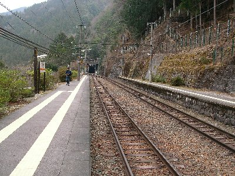
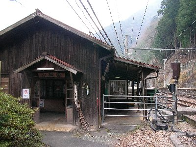
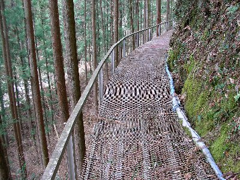
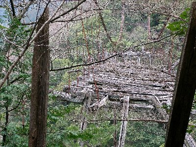
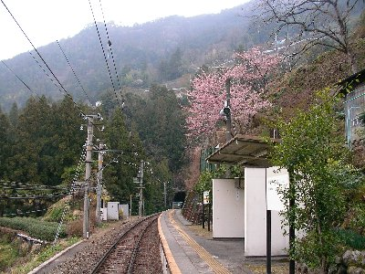

飯田線に乗ろうよ | 2007年3月 |
|---|---|
| ＪＲ飯田線が何処を走っているか知っていますか？ 愛知の豊橋から静岡を経由して長野の辰野に至る、とってもローカルな単線です。（ローカルって言うと、近隣住民に失礼ですが） この沿線には、秘境駅と呼ばれる無人駅が幾つか存在していることを知り、訪れてみたくなりました。 秘境駅とは、駅まで列車以外で行く手段が無いところ、つまり車などでいけない陸の孤島の様な場所を指すようです。 今回目指した秘境駅「小和田駅」は、東側を山、西側が天竜川に挟まれた場所で、近くに車が通れる道は無く、近くの集落まで歩いて1時間と言う、まさに陸の孤島にふさわしい駅として、鉄道マニアの方々にも人気を博している駅です。 もちろん無人駅です。 | |
|  小和田駅 |  小和田駅駅舎 |
| 静岡を朝6時前に出発し、小和田駅に着いたのは11時過ぎ。（全て普通列車） ゆうに5時間掛かって同じ県内とは驚きです。ほぼ同じ時間で、大阪まで行けるのですから、どの位遠いか分かると言うものです。 小和田駅で降りたのは、鉄マニア風の青年2名と、おばちゃん3名。マニア風の二名は、早速駅周辺の撮影を始めていたので、マニア風ではなく、完全なるマニアの方ですね。 別に二人は仲間と言う風ではなく、別行動で写真撮影に勤しんでいました。 小和田駅は、見事に山の傾斜に立っている感じで、トンネルから出たら駅。駅から出発するとトンネル。とまさに山の谷間に存在しています。 最寄りの集落まで、獣道のような道を歩いて小1時間掛かるようです。 なるほど目の前の天竜川に橋も無く、近くに廃屋のような建物があるだけで、これといって何もありません。 | |
|  小和田駅から集落への道 |  高瀬橋（落ちかけてるの分かる？） |
| この駅も、雅子様ご結婚の時には名前から有名になり、沢山の観光客で賑わった時期があるそうですが、今は寂しいものです。 次の列車まで2時間位ある為、暇つぶしに壊れた橋でも見に行こうかと、舗装されていない道を北上していきました。 小和田駅は静岡県に位置するのですが、目の前の天竜川を挟んで向こう岸は愛知県。 それを、ちょっと北上すると長野県と言う三県国境に近い場所に立っています。 道は、車どころかバイクさえ無理な感じで、所々鉄のメッシュ状になっていました。 5分ほど北上すると一軒のお宅を発見。 人が住んでいるようです。 先ほど駅で見かけたおばちゃん二人がお宅訪問をしていました。 後でおばちゃんに聞いたところ、老夫婦が二人っきりで住んでいるそうで、食べ物などの必要物資は、対岸から荷物用ケーブルで運んで貰っているそうです。 そう言われると、新聞で見たことがある「お巡りさんや、郵便局員が列車で訪問する家」って言うのはここの所かと、思い出されました。 | |
 小和田駅は駅名から恋の成就駅なんだって |  中井侍駅 |
| 壊れた高瀬橋は、本当に壊れたままになっていて、吊り橋の両側ロープしか付いていないような感じです。この橋も、天竜川に掛かっているのではなく、支流の川に架かっている橋なので、重要視されていないのかも知れません。 あ、先ほども書きましたが、駅名から「恋成就駅」と成っているようです。 後は駅で時間をつぶし、次の列車で隣の秘境駅「中井侍」へ。 列車は駅についてもドアが自動では開きません。 手で引き戸を開けます。（ボタンも無かった）。降りると車掌さんが飛んできて、切符を確認します。 中井侍駅は、確かに駅前道路もありませんが、真後ろに民家が立ち、ちょっと山を登れば道路があり、まったくの陸の孤島ではありませんでした。 地元の方々もいらっしゃって、通常の田舎駅（また怒られそうな発言ですが）でしたね。 雨も降り始め、この駅で折り返し静岡に帰る事にしました。 一日掛かりとなってしまう飯田線秘境駅ツアーですが、なかなか楽しい旅でした。 普通に切符を買うと、結構高かった気がしますが、18切符で行ったので安いものです。 18切符が余ってしまう方など、暇つぶしを兼ねてのんびり旅行はどうでしょう。 | |
| 写真＆コメント ｂｙ べっしー | |